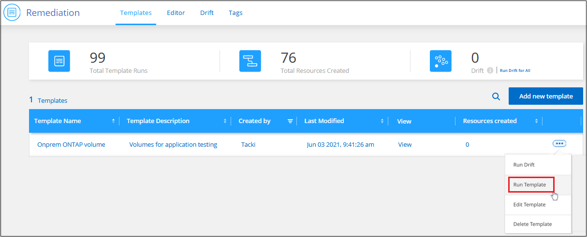
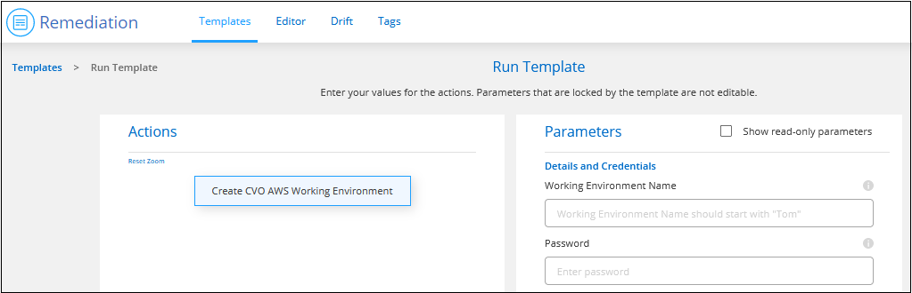
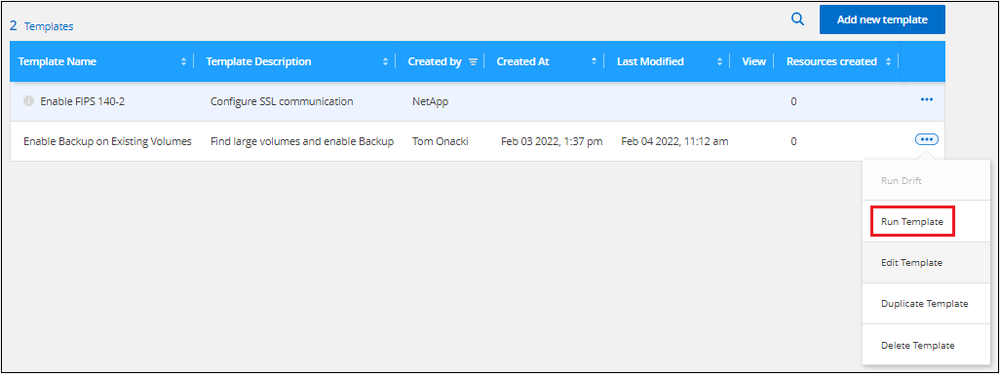

시작하십시오
시작하십시오
템플릿을 사용하여 리소스를 만들거나 수정합니다
 변경 제안
변경 제안
조직에서 특정 워크로드 및 애플리케이션에 최적화된 작업 환경 또는 볼륨을 생성하기 위해 구축한 애플리케이션 템플릿 중 하나를 선택합니다. 템플릿을 사용하여 를 활성화할 수도 있습니다 "BlueXP 백업 및 복구", "BlueXP 분류", 및 "BlueXP 복제" 생성된 볼륨 또는 기존 볼륨에 대해 선택합니다.
템플릿을 사용하여 Cloud Volumes ONTAP, Azure NetApp Files 및 사내 ONTAP 시스템에 대한 볼륨을 생성할 수 있습니다.
빠른 시작
다음 단계를 따라 빠르게 시작하거나 나머지 섹션을 아래로 스크롤하여 자세한 내용을 확인하십시오.
 필수 사전 요구 사항을 확인합니다
필수 사전 요구 사항을 확인합니다-
템플릿을 사용하여 Cloud Volumes ONTAP, 온프레미스 ONTAP 또는 Azure NetApp Files 시스템의 볼륨을 생성하기 전에 볼륨이 구축될 적절한 작업 환경에 액세스할 수 있는지 확인하십시오.
-
템플릿이 같은 볼륨에 클라우드 서비스를 활성화하는 경우 "BlueXP 백업 및 복구" 또는 "BlueXP 분류"에서 서비스가 활성화되어 있고 사용 중인 환경에서 라이센스가 부여되었는지 확인합니다.
 애플리케이션 템플릿 서비스를 시작합니다
애플리케이션 템플릿 서비스를 시작합니다상태 > 수정 * 을 선택하고 * 템플릿 * 탭을 클릭합니다.
 템플릿을 실행하고 매개 변수를 정의하여 리소스를 빌드합니다
템플릿을 실행하고 매개 변수를 정의하여 리소스를 빌드합니다템플릿을 선택하고 * 템플릿 실행 * 을 클릭한 다음 편집 가능한 필드에 값을 입력하여 리소스를 생성합니다.
요구 사항
다음 요구 사항을 읽고 지원되는 구성이 있는지 확인합니다.
-
커넥터가 없는 경우 "커넥터를 만드는 방법을 참조하십시오" AWS, Azure 및 GCP의 경우.
-
Cloud Volumes ONTAP 볼륨을 생성할 때 Cloud Volumes ONTAP 작업 환경을 사용할 수 있는지 확인합니다.
-
온-프레미스 ONTAP 볼륨을 만들 때 온-프레미스 ONTAP 작업 환경을 사용할 수 있는지 확인합니다.
-
Azure NetApp Files 볼륨을 생성할 때 Azure NetApp Files 작업 환경을 사용할 수 있는지 확인합니다.
-
템플릿이 같은 볼륨에 클라우드 서비스를 활성화하는 경우 "BlueXP 백업 및 복구", "BlueXP 분류", 또는 "BlueXP 복제"에서 서비스가 활성화되어 있고 사용 중인 환경에서 라이센스가 부여되었는지 확인합니다.
볼륨 템플릿을 선택하여 실행합니다
템플릿을 선택하고 실행하여 새 볼륨을 생성하는 방법은 여러 가지가 있습니다.
-
작업 환경에서 볼륨 템플릿을 실행합니다
-
Templates 대시보드에서 볼륨 템플릿을 실행합니다
선택하는 방법에 관계없이 정의해야 하는 필수 볼륨 매개 변수에 대한 세부 정보는 다음 섹션에서 확인할 수 있습니다.
작업 환경에서 볼륨 템플릿을 실행합니다
Working Environment_페이지 및 _Volume Details_페이지에서 기존 작업 환경에 볼륨을 추가할 수 있습니다.
-
Working Environment_페이지 또는 _Volume Details_페이지에서 * 템플릿에서 볼륨 추가 * 를 클릭합니다.

Templates Dashboard_가 표시되고 선택한 작업 환경에 적용할 수 있는 템플릿만 나열됩니다. 예를 들어, 이 템플릿에는 Cloud Volumes ONTAP 템플릿만 표시됩니다.
-
을 클릭합니다
 및 * 템플릿 실행 * 을 참조하십시오.
및 * 템플릿 실행 * 을 참조하십시오.
Template_페이지에서 볼륨 추가 가 나타납니다.
-
편집 가능한 필드에 값을 입력하여 볼륨을 생성하고 * 템플릿 실행 * 을 클릭합니다.

템플릿 대시보드에서 볼륨 템플릿을 실행합니다
_Templates Dashboard_에서 기존 작업 환경에 볼륨을 추가할 수 있습니다.
-
상태 > 수정 * 을 선택하고 * 템플릿 * 탭을 클릭합니다.
Templates Dashboard_가 표시됩니다.
-
사용할 서식 파일의 경우 을 클릭합니다
및 * 템플릿 실행 * 을 참조하십시오.
Run Template_페이지가 나타납니다.
-
편집 가능한 필드에 값을 입력하여 볼륨을 생성하고 * 템플릿 실행 * 을 클릭합니다.

대시보드에서 템플릿을 실행할 때는 작업 환경 및 기타 변수(예: 스토리지 VM 및/또는 애그리게이트)를 선택해야 합니다. 작업 환경에서 템플릿을 실행하면 작업 환경이 자동으로 채워집니다.
작업 환경 템플릿을 선택하여 실행합니다
회사에서 이 기능에 대한 템플릿을 만든 경우 _Templates Dashboard_에서 새 작업 환경을 만들 수 있습니다.
작업 환경을 만드는 데 필요한 세부 사항에 대한 질문이 있는 경우 를 참조하십시오 "AWS에서 Cloud Volumes ONTAP 실행".
-
상태 > 수정 * 을 선택하고 * 템플릿 * 탭을 클릭합니다.
Templates Dashboard_가 표시됩니다.
-
사용할 서식 파일의 경우 을 클릭합니다
및 * 템플릿 실행 * 을 참조하십시오.
Run Template_페이지가 나타납니다.
-
편집 가능 필드에 값을 입력하여 작업 환경과 첫 번째 볼륨을 생성하고 * 템플릿 실행 * 을 클릭합니다.

기존 자원을 찾는 템플릿을 선택하여 실행합니다
회사에서 이 기능을 사용하여 템플릿을 만든 경우 특정 리소스(예: 볼륨)를 찾은 템플릿을 실행한 다음 해당 리소스(예: BlueXP 백업 및 복구)에서 클라우드 서비스를 활성화할 수 있습니다. 템플릿을 실행할 때 약간의 조정을 통해 클라우드 서비스를 적절한 리소스에만 적용할 수 있습니다.
-
상태 > 수정 * 을 선택하고 * 템플릿 * 탭을 클릭합니다.
Templates Dashboard_가 표시됩니다.
-
사용할 서식 파일의 경우 을 클릭합니다
및 * 템플릿 실행 * 을 참조하십시오.
Run Template_페이지가 나타나고 템플릿에 정의된 검색을 즉시 실행하여 기준과 일치하는 볼륨을 찾습니다.
-
볼륨 결과 영역에서 반환된 볼륨 목록을 봅니다.

-
결과가 예상과 다를 경우 템플릿의 _Volume_부분에 클라우드 백업 사용_의 기준을 사용하여 BlueXP 백업 및 복구를 활성화할 각 볼륨에 대한 확인란을 선택하고 * 템플릿 실행 * 을 클릭합니다.
결과가 예상과 다른 경우 를 클릭합니다
 검색 기준 _ 옆에 있는 을(를) 클릭하고 검색을 더 구체화합니다.
검색 기준 _ 옆에 있는 을(를) 클릭하고 검색을 더 구체화합니다.
템플릿이 실행되고 검색 기준에서 확인한 각 볼륨에서 BlueXP 백업 및 복구가 활성화됩니다.
모든 오류는 _ 템플릿 실행 _ 페이지에서 호출되며 필요한 경우 문제를 해결할 수 있습니다.